Articulate the business model.
Stephen E. Chick · INSEAD
How do we generate great opportunities?
Turn to your neighbor. Ninety seconds.
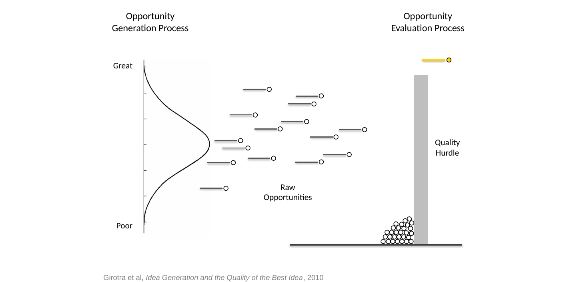
Four levers run the idea factory.
Take more draws
Generate more opportunities.
Shift the mean
Raise the average quality.
Raise the variance
Wider spread, weirder ideas.
Evaluate better
Select among them more accurately.
We care only about the right tail: the quality of the best idea, not the average.

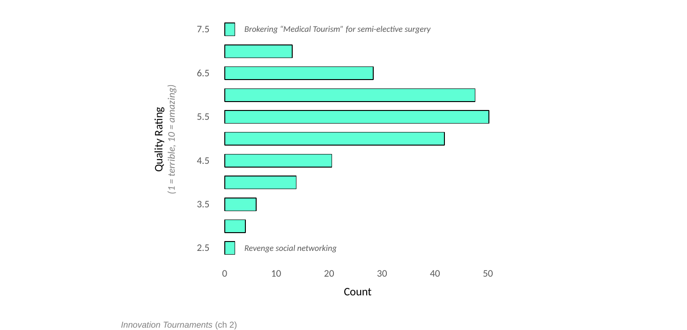
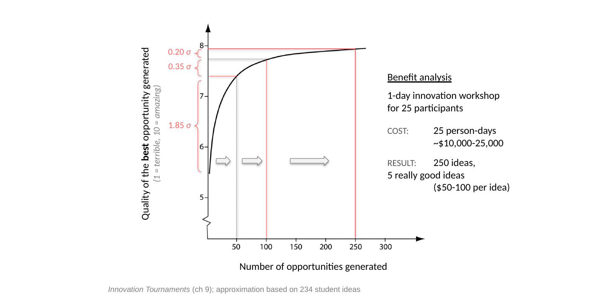
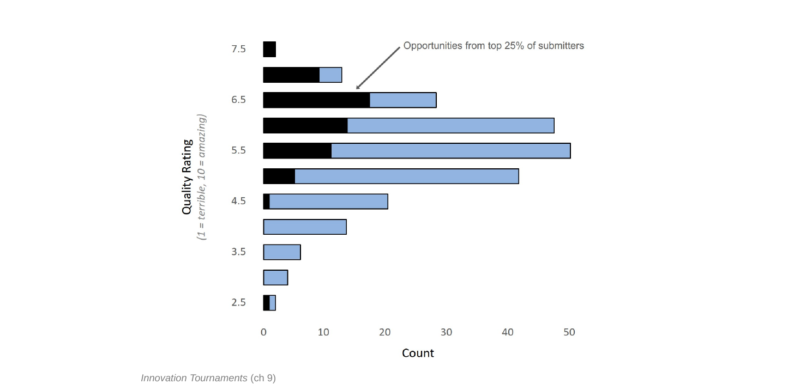
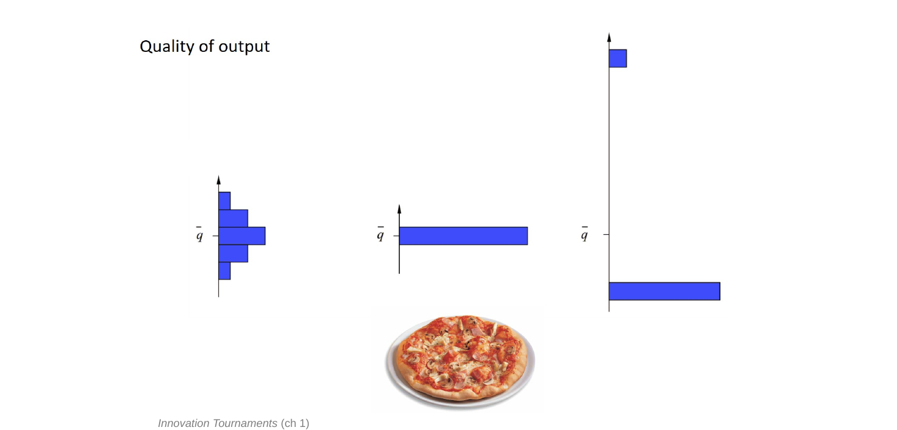

Better screening is a lever in its own right.
- Use more independent evaluations. Aggregate judgements (BIN); the crowd beats the individual.
- Anchor on purchase intent. Base evaluation on would-you-buy, not would-you-like.
- Screen in stages. Multiple, cheaper-first passes before expensive commitment.
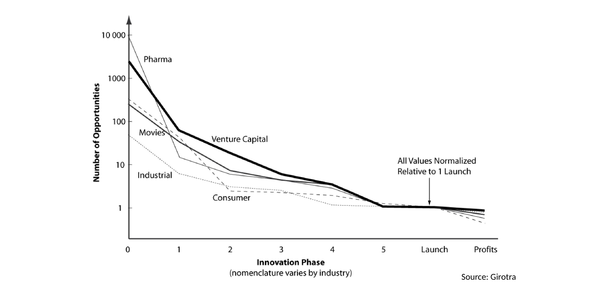
Spend little on many; spend more on the survivors.
Quality of opportunity, as a venture moves through the funnel
Screening technique trades accuracy for efficiency.
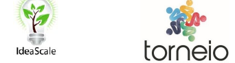
Crowds & web-based screening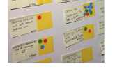
Ideation workshops & prediction markets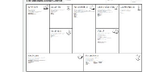
Business Model Canvas & the 3M RWW methodThree questions before you commit: Real, Win, Worth it.
Real
- Is there a real market you can serve with this product or service?
- Market size, potential pricing, availability of technology
- Can you produce and deliver it at high volume?
Win
- Can you win with this opportunity?
- Can you establish a sustainable competitive advantage?
- Can you patent or brand the idea?
- Are you more capable of executing it than competitors?
Worth it
- Is the opportunity worth it financially?
- Do you have the resources needed?
- Will the investment earn appropriate returns?
Articulate the business model.
Value Creation Analysis runs in six steps.
Carry over your X·Y·Z from a prior session.
Make it explicit on the Business Model Canvas.
Alternative models, the next-best option, adjacent industries.
How the model differs from each comparison, box by box.
Why buy this over the alternatives? What risks do customers face?
Can you deliver the promise profitably? Which risks to manage?
X will buy Y because of Z.
You framed this in a prior session. The VCA starts by restating it: a model is only worth analyzing once you know the thesis it has to deliver.
Step 2 maps the model on the Business Model Canvas.
Nine blocks, nine sets of hypotheses.
Customer Segments
Who are your most important customers? What are their archetypes? What job do they want done?
Value Propositions
What customer problems are you helping to solve? What needs are you satisfying?
Channels
Through which channels (sales, distribution, support) do customers want to be reached?
Customer Relationships
How will you get, keep, and grow customers?
Key Activities
What key activities does the model require? Manufacturing, software development, a concierge service?
Key Resources
What key resources do you need? Financial, physical, intellectual property, human?
Key Partners
Who are your key partners and suppliers? What do you get from them, and what do you give back?
Revenue Streams
How will you make money? What is the revenue model? What are the pricing tactics?
Cost Structure
What are the most important costs? What is the mix of fixed and variable costs?
Every box you just filled is a hypothesis.
OpenAI
Frontier intelligence, sold as a product (ChatGPT) and as infrastructure (the API).
Microsoft / Azure (primary cloud)
AWS, Oracle, Stargate (compute)
NVIDIA, AMD, Broadcom (chips)
SIs, ISVs, data & safety partners
Frontier model R&D
Safety & alignment
Product engineering: ChatGPT, API, Codex
Compute operations
Enterprise go-to-market
Model IP, weights & safety stack
Elite research & engineering talent
Scaled compute capacity
ChatGPT brand & global user base
Capital + PBC structure
Frontier intelligence on demand
Productivity for knowledge work
A platform to embed AI: API, fine-tuning, agents
Enterprise-ready: privacy, SOC 2, admin
Broad access: free to enterprise
Self-serve freemium, product-led
Subscriptions with usage limits
Enterprise sales, AI advisors, SLAs
Trust: privacy & compliance
GPT / app ecosystem
ChatGPT apps (web, iOS, Android)
The OpenAI API platform
Direct enterprise sales
Cloud channels: Azure, Bedrock, OCI
Integrations: M365, Slack, GitHub
Consumers, students, creators
Developers & startups
SMBs & teams
Large & regulated enterprises
Education, nonprofits, public sector
Training compute (lumpy, capital-heavy)
Inference (scales with usage)
Top research & engineering talent
Data licensing, annotation & evals
Safety, security & compliance
ChatGPT subscriptions: Plus, Pro, Business
Enterprise, Edu & Healthcare contracts
Usage-based API: tokens, tools, fine-tuning
Codex plans
Cloud-channel revenue
NVIDIA
The full-stack AI-infrastructure platform. FY26 revenue $215.9B, up 65% year on year.
Foundry: TSMC, Samsung
Memory: SK Hynix, Micron (HBM)
CoWoS packaging ecosystem
Contract mfg: Foxconn, Wistron
CSPs, OEMs, ODMs, AIBs, SIs
Design GPUs, CPUs, DPUs, networking, systems
Build CUDA, NIM, NeMo, Omniverse, DRIVE
Yearly platform cadence (Blackwell to Rubin)
Secure supply, manage yields
Developer evangelism: GTC, DLI
GPU architecture + CUDA platform (IP)
Full stack: Grace CPU, NVLink, DGX/HGX
Software: AI Enterprise, NIM, Omniverse
~7.5M+ CUDA developers
~42,000 staff (~31k in R&D)
End-to-end AI infrastructure: train + inference
Full stack: chips + systems + networking + software
More performance, lower cost vs CPU-only
The data-center AI factory
Gaming & pro-viz (RTX), automotive (DRIVE)
High-touch: hyperscalers, CSPs, OEMs
Solution architects, co-design, roadmaps
Developer-led: CUDA, GTC, DLI, Inception
Enterprise subscriptions, support, warranties
Sticky via the CUDA installed base
Direct sales: CSPs, OEMs, enterprises
Server channels: Dell, HPE, Lenovo, Supermicro
AIBs, distributors, retail (GeForce, RTX)
Cloud + DGX Cloud
developer.nvidia.com, GeForce NOW
Hyperscalers building AI factories
AI labs, neoclouds, sovereign AI
Enterprises: health, finance, telecom, mfg
Gamers, creators, PC OEMs
Pro-viz; automotive, robotics, embedded
Cost of revenue: wafers, HBM, CoWoS, assembly
R&D ~$18.5B (FY26)
SG&A ~$4.6B
Non-cancellable capacity commitments
Legal, IP, export-control, compliance
Product sales: GPUs, systems, networking, SoCs
Data Center $193.7B (~90% of FY26)
Gaming $16.0B
Pro Viz $3.2B; Automotive $2.3B
Software/services: AI Enterprise, DGX Cloud
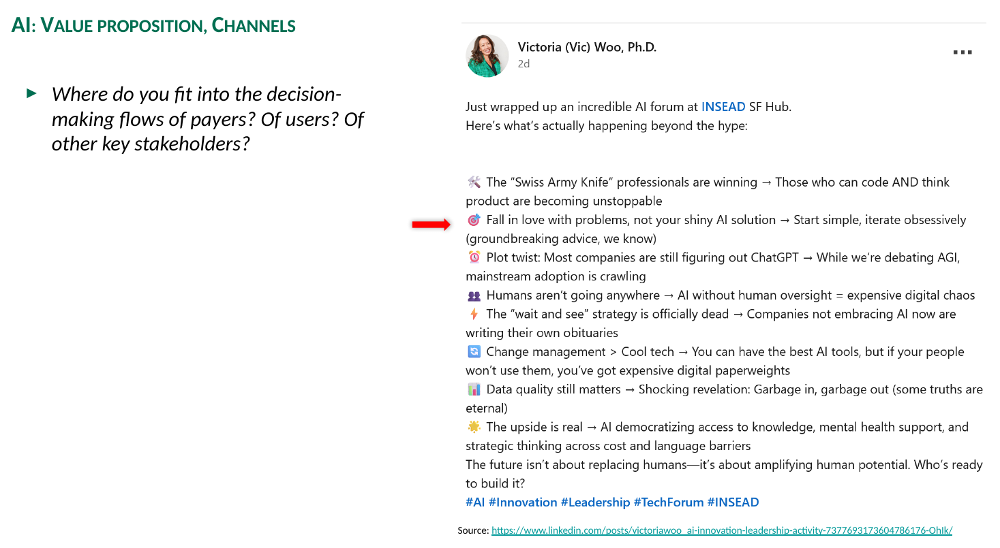
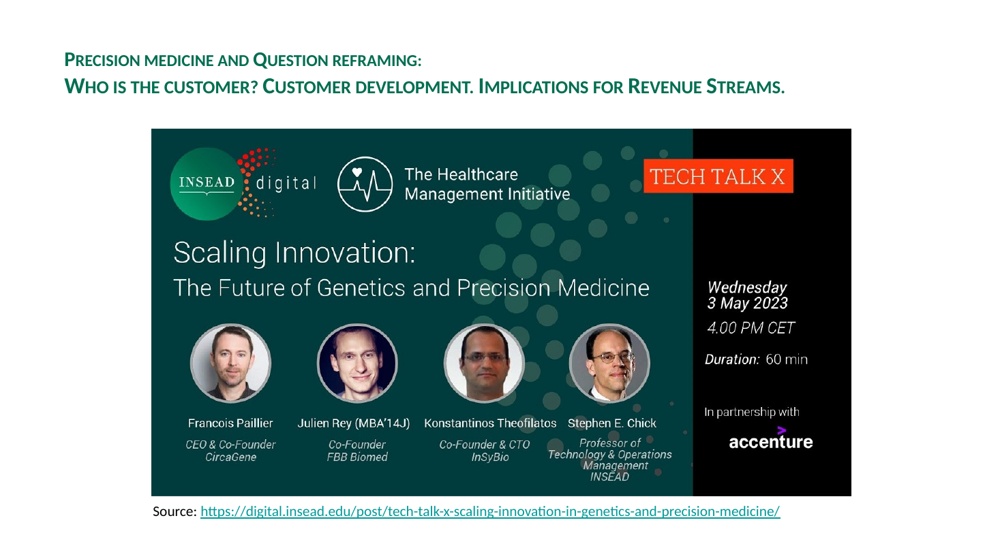
How you get paid depends heavily on the country.
Out-of-pocket (patient)
- In most large markets, patients aren’t accustomed to paying for healthcare.
Employer-paid
- Need to show HR / corporate benefit
- Long sales cycles
- Once secured, easy to work with clinics
Paid by hospital
- High burden of proof — trials needed
- Hard to scale; long sales cycles
Existing reimbursement code
- Fastest path — aligned with current economics
- Rare to find a fit
New reimbursement code
- Large investment to secure new codes
- Innovation financing can help, mixed success
Paid / sponsored by pharma
- Long sales cycles
- Once secured, easy to work with clinics
Business Model Canvas tips.
Include enough detail to see why an alternative loses.
A one-word sticky doesn’t explain anything. Write enough that a reader understands why this choice beats the next best option.
Too many stickies bury the model in noise.
A canvas covered edge-to-edge in notes is unreadable. Keep each block to the handful of assumptions that actually drive the decision.
If removing one piece doesn’t break the model, cut it.
Test every sticky: take it off the canvas. If the business model still stands, it wasn’t essential — it was decoration.
Color-code by customer segment or value proposition.
When one canvas serves several segments, color lets you trace a single segment’s path through every block at a glance.
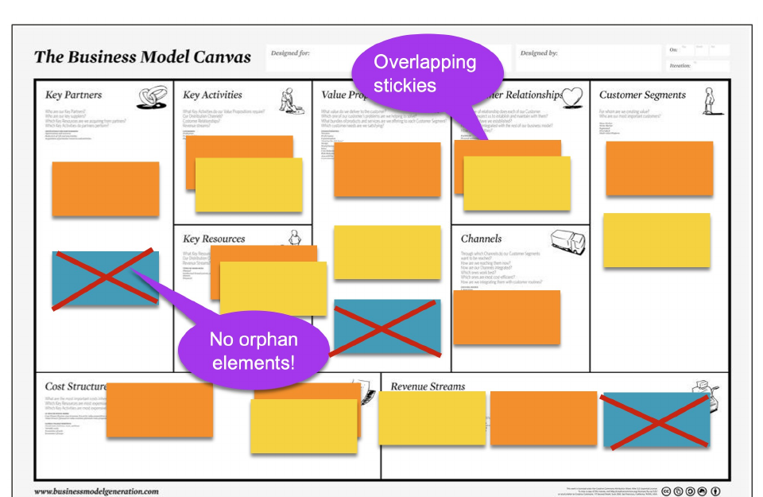
A value proposition names the problem solved — not a feature list.
“Product,” “Feature 1,” “Feature 2” is a spec sheet. A value proposition says what job gets done and why that matters.
What makes your start-up work? Value creation analysis, next.
- State the thesis. Carry over your X·Y·Z from a prior session.
- Use the BMC to articulate the business model. What are the key sectoral assumptions?
- Identify points of comparison. Alternative business models, the customer's next-best option, closest operational analogues, other industries.
- Map the differences between your business model and each point of comparison.
- Demand-side analysis. Why will customers choose you over the alternatives? What are their risks?
- Profitability and risk analysis. Can you deliver profitably? How does the model manage the customer's risk?
Applying business model articulation: Better Place & NIO.
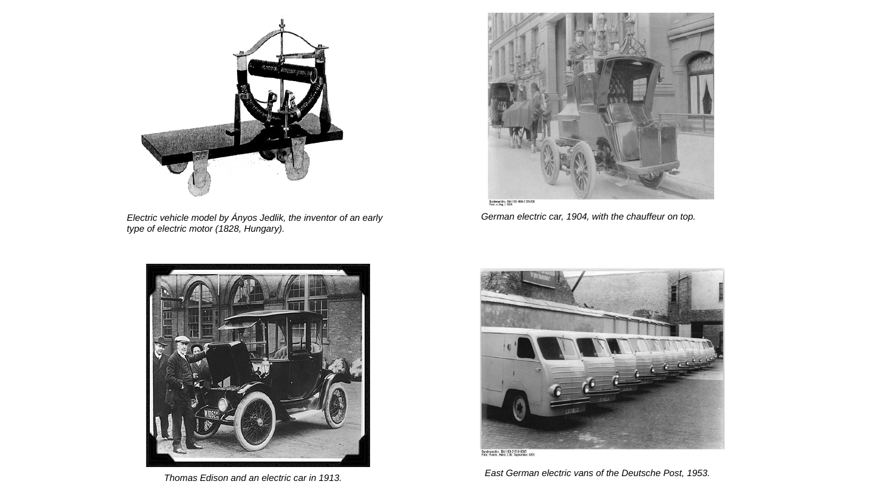
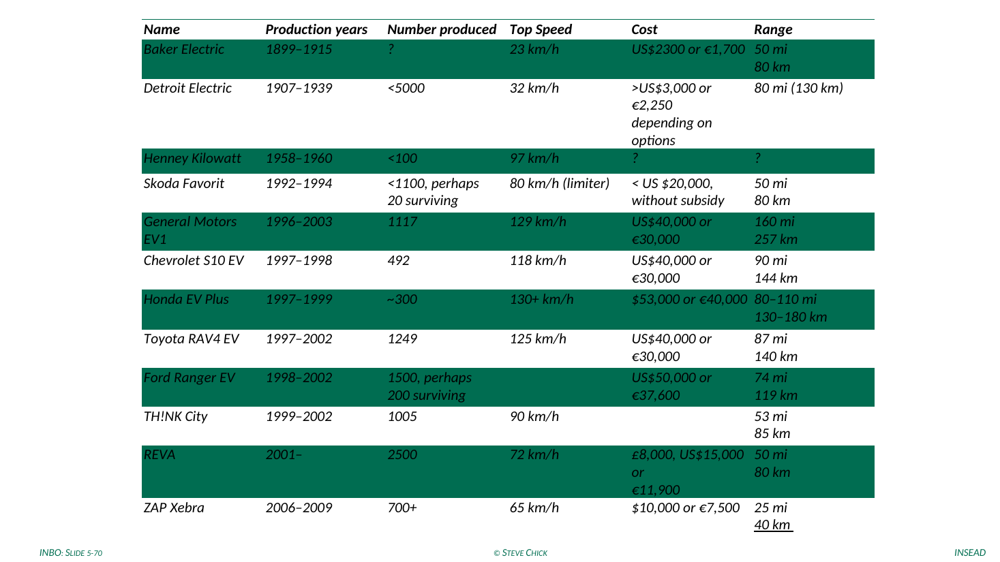
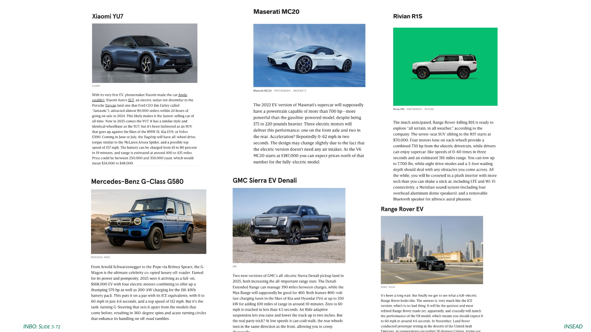
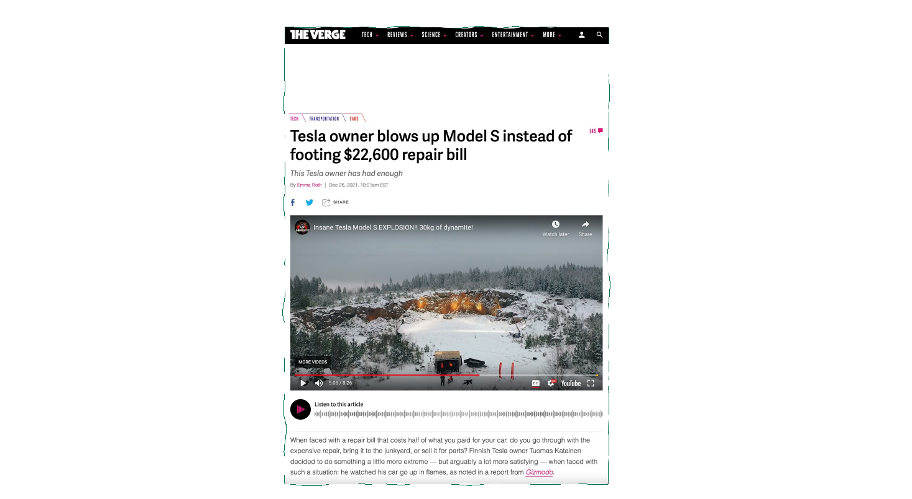
Better Place proposed you’d never own the battery at all.
Sell the car without the battery; swap depleted batteries for charged ones at a station, in minutes.
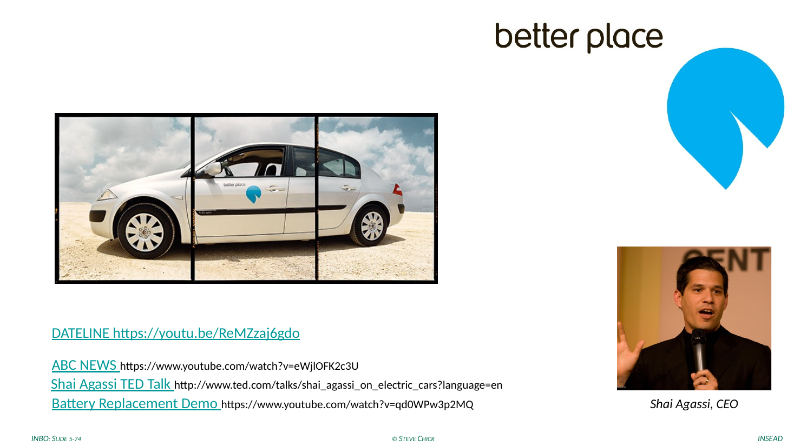
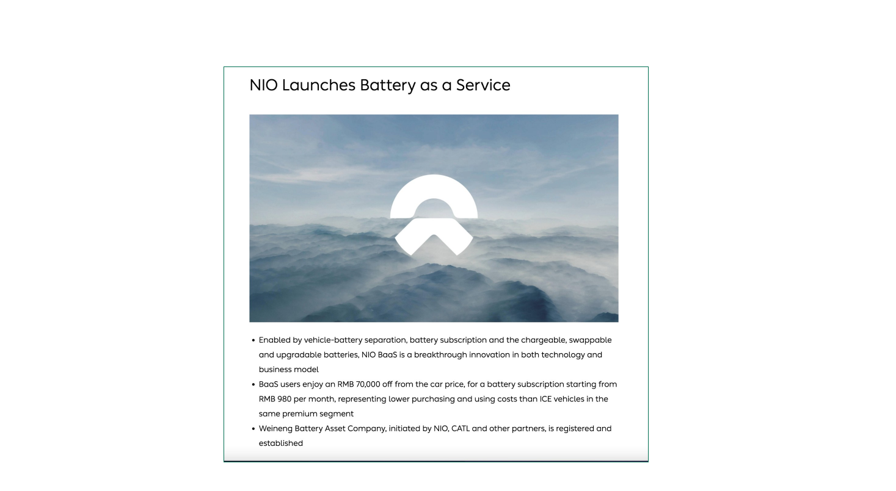
Can NIO become the Tesla of China?
Battery-as-a-Service as a subscription: swap instead of charge, and never own a depreciating battery.
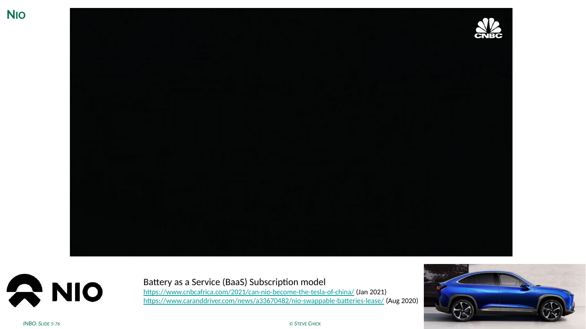
Battery swapping has been tried before — can it take off now?
Same idea, two eras. Watch, then ask what changed.
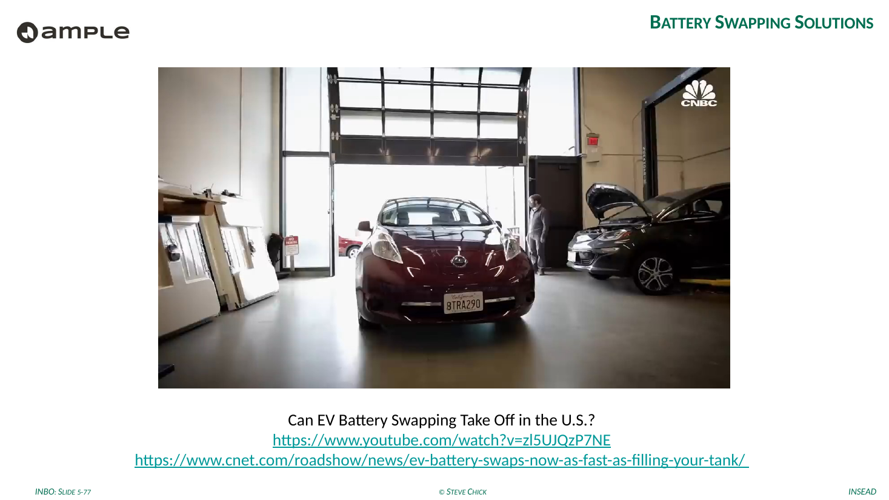
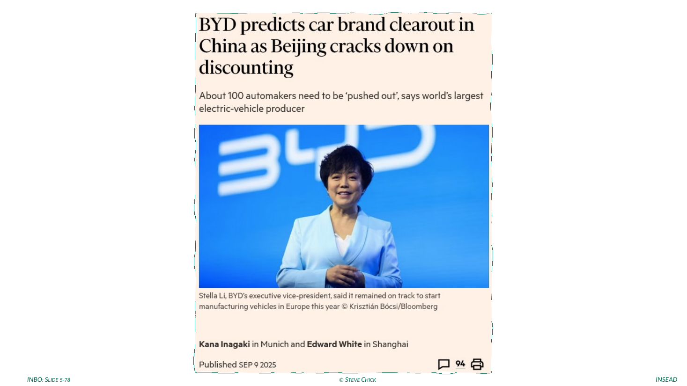
One diagram, two companies, a decade apart.
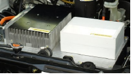
Battery
- Leased by BP
- Limited range
- Cost
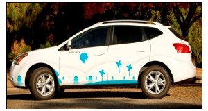
Customer
- Payment plan
- Miles for fixed charge
- Overage charge
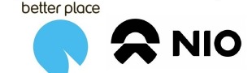
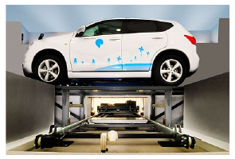
Switching Station
- Inventory of batteries
- Service level
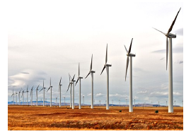
Electricity
- Paid by BP
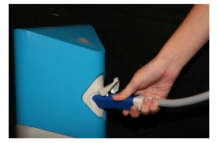
Charging Spots
- Home or work
X will buy Y because of Z.
You framed this in a prior session. The VCA starts by restating it: a model is only worth analyzing once you know the thesis it has to deliver.
Articulate BMC
VCA step2/6The swappable-battery business model, articulated.
- Auto producer
- Battery producers
- Generic battery platform
- Standardization body
- Electricity suppliers
- Government
- Battery-station mgmt.
- Sales contracts
- Electricity procurement
- Subscription mgmt.
- Per-mile billing
- Stations
- Batteries
- Cars
- IP
- Green
- No range anxiety
- No upfront battery cost
- No battery ownership
- Subscription
- Direct to consumer
- Green customers
- Commercial fleets (rental, taxi)
- Battery costs — count, purchase, maintenance
- Electricity & station costs
- Per-mile price
- Fixed + overage
- Subscription fee
Choose comparisons that make the differences visible.
Alternative solution
- A standard gasoline car, refueled at any of ~150,000 U.S. gas stations — the incumbent product and its infrastructure, both already built.
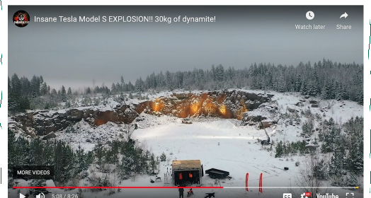
Alternative ownership model
- Tesla — you own the battery outright and charge or fast-charge it yourself, with all the repair and depreciation risk that comes with owning a $20K+ pack.
Similar technology need
- Smartphone battery charging — the same problem of frequent charge cycles, degradation, and who bears the replacement cost, solved without swapping.
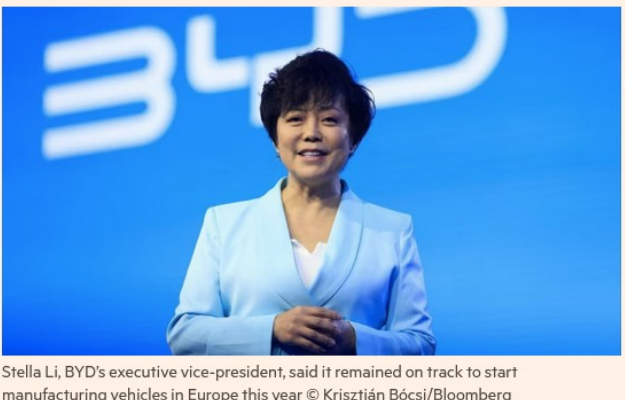
Competitive backdrop
- BYD and China’s price war — the next-best option for many customers is simply a cheaper, well-built standard EV, not a subscription battery model at all.
Map Differences
VCA step4/6Articulate your venture on the canvas.
- Fill the canvas. Complete the business-model canvas for your surviving opportunity — all nine blocks.
- Name the Z assumption. Mark the one belief that, if wrong, sinks the model.
- Push your canvas as far as you can until the next session.
Teams re-form mid-course — a small taste of startup turnover.
- Individual, then team. The course starts with individual work; you reorganize into teams partway through.
- Idea survives → recruit. You gain the right, and the responsibility, to build out your team.
- Idea doesn’t survive → join. Pair with a surviving project; from here, the unit of work is the group.
- Why it matters. Recruiting after resources are granted, and becoming useful on someone else’s team fast, are core founder skills — new ventures have high turnover.